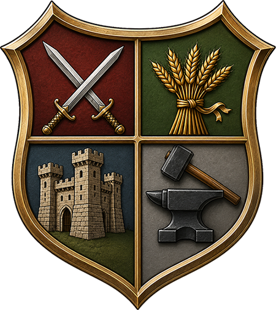

AOE2: Empire Forge
Build a fully custom AoE2:DE civilization — bonuses, unique units, tech tree, architecture — and generate a real game mod. No modding tools. No scripts. No guesswork.
Made for players, not modders
If you can read AoE2's tech tree and know what a civ bonus does, you have all the expertise this tool requires.
Point, click, pick. Every bonus, unit, and tech is surfaced as a plain-language card — not a cryptic effect command. We handle the dat file so you don't have to.
Share a working .aoe2mod with your friends in minutes. Runs in the browser or locally — no account, no subscription, no reliance on third-party services.
A lightweight Windows app that reads your own game files — nothing is uploaded. Built on the same engine that powers the KrakenMeister civ format.
Build Anything
Mix and match from every vanilla bonus, unique unit, and unique tech in the game. Or write your own.
Choose from every vanilla bonus in the game — economy, military, tech cost, building speed, and more — with per-bonus multiplier controls.
Pick any vanilla or community unique unit as your Castle Age and Imperial Age special — with full stat overrides and a live tech tree preview.
Assign Castle and Imperial unique techs from the full vanilla roster. See the tech tree update live as you configure your civ.

Download Empire Forge for free and build your first custom civilization in minutes. Works with any AoE2:DE install — Steam or Microsoft Store.
Download for Windows — Free Prefer the browser? Build in browser using Fritz' hosted version.